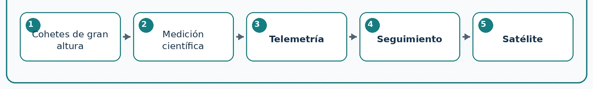

1945-1957
Antes de Sputnik: el camino tecnológico que hizo posible escuchar una máquina desde el espacio
Cohetes, telemetría, fotografías y seguimiento antes del primer satélite

La pregunta inicial
Antes de que existiera Sputnik, la humanidad tuvo que resolver un conjunto de problemas básicos: ¿cómo enviar un instrumento por encima de la atmósfera?, ¿cómo medir lo que ocurre allí arriba?, ¿cómo recuperar esas mediciones y cómo saber dónde se encuentra el vehículo? La respuesta no apareció de una sola vez. Entre el final de la Segunda Guerra Mundial y 1957 se combinaron cohetes, electrónica, radio, fotografía y cálculo.
De arma a instrumento científico
El cohete alemán V-2 fue desarrollado como arma, pero después de 1945 Estados Unidos y la Unión Soviética estudiaron su tecnología. En Estados Unidos, varios V-2 capturados fueron adaptados para transportar instrumentos científicos. Estos vuelos permitieron medir temperatura, presión, radiación y otras propiedades de la atmósfera superior. En 1946, una cámara transportada por un V-2 tomó fotografías de la Tierra desde una altura mayor que la alcanzada por globos anteriores. La novedad no era solo la fotografía: era la posibilidad de colocar instrumentos en regiones inaccesibles para aviones.
El problema de recuperar información
Un instrumento puede medir mucho, pero si la información se pierde durante la caída, la misión sirve de poco. Por eso la radio se convirtió en una pieza esencial. La telemetría consiste en medir una variable y transmitir su valor a distancia. Un sensor transforma temperatura, presión, aceleración o actividad biológica en una señal eléctrica; después un transmisor la envía por radio a una estación terrestre. Así comenzó a construirse el mismo esquema que luego usarían los satélites: SENSOR → ELECTRÓNICA → RADIO → ANTENA TERRESTRE → DATOS.
Seguimiento y cálculo
También había que conocer la trayectoria. Para ello se utilizaron radares, antenas direccionales, observaciones ópticas y cálculos cada vez más rápidos. El desarrollo de computadoras electrónicas como ENIAC mostró que muchos cálculos balísticos y orbitales podían automatizarse. La computadora todavía no estaba a bordo de los vehículos, pero ya era parte del sistema espacial porque ayudaba a predecir trayectorias y procesar mediciones.
El Año Geofísico Internacional
En 1957-1958 se celebró el Año Geofísico Internacional, una campaña de investigación coordinada en la que muchos países estudiarían la Tierra, la atmósfera y el espacio cercano. Estados Unidos preparaba Vanguard y una red de seguimiento llamada Minitrack. La Unión Soviética desarrollaba el cohete R-7, suficientemente potente para colocar una carga en órbita. El objetivo científico y el desarrollo de misiles se encontraron en el mismo momento histórico.
La idea clave
Cuando Sputnik fue lanzado en octubre de 1957, casi todas las piezas tecnológicas necesarias ya habían sido ensayadas de alguna forma: cohetes de gran altura, transmisores de radio, telemetría, radares, estaciones de seguimiento y cálculo orbital. Sputnik no apareció de la nada; fue el resultado visible de más de una década de problemas técnicos resueltos paso a paso.
Fuentes de esta etapa
Fuentes principales utilizadas para esta etapa de la cronología.
- NASA/APOD - First Rocket Launch from Cape Canaveral
- NASA History - Sputnik and the Dawn of the Space Age